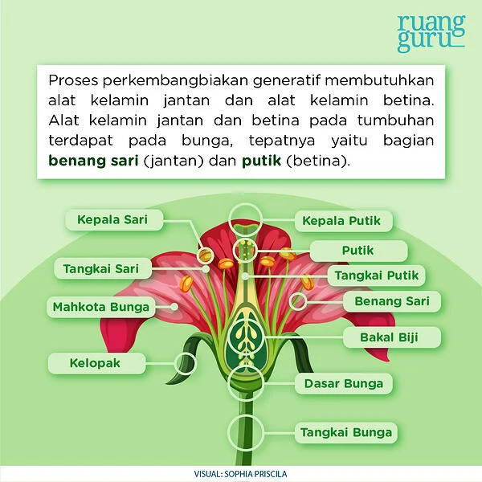
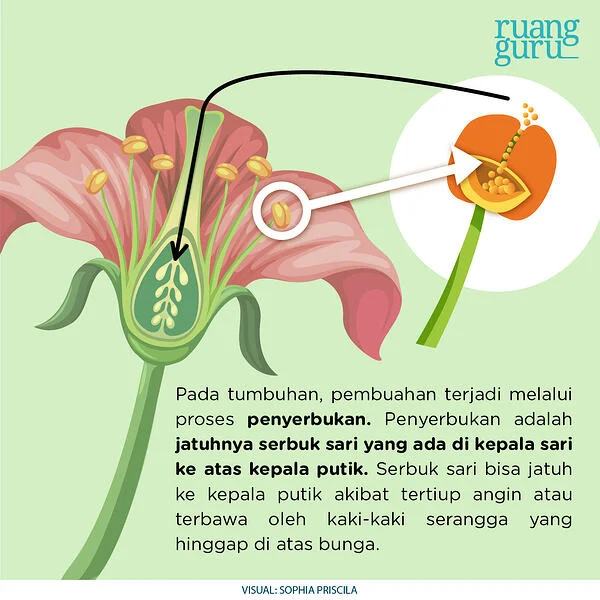
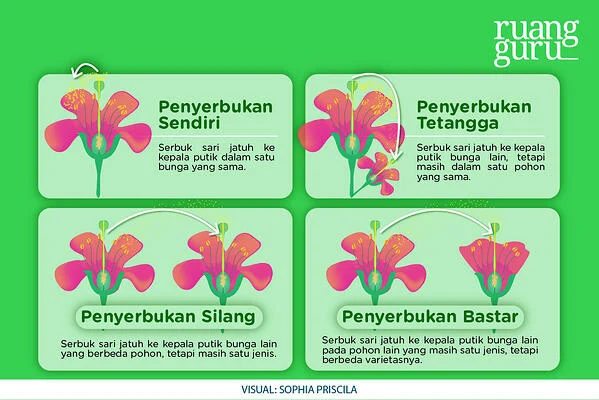

Perkembangbiakan Generatif pada Tumbuhan | IPA Terpadu Kelas 6
“Ih, Guntur.. Kenapa fotonya nge-blur semua, sih? Fotoin lagi, dong! Tapi yang bener, ya.” ujar Roro sambil menyerahkan kamera digital milik ayahnya kepada Guntur.
“Hadeeehh.. Foto-foto terusss. Kita kapan makannya, nih?” ujar Guntur kesal.
“Iyaa, habis ini kita makan, tapi fotoin dulu yang bener.” ujar Roro sambil berpose. Ia tersenyum lebar sambil menunjukkan bunga yang terselip manis di rambutnya ke arah kamera.
“Hehe.. Semangat ya, Guntur.” Kanguru menepuk pundak Guntur, berusaha menyemangati Guntur.
Guntur hanya bisa menghela napas, “Aku foto sekarang, yaa. Satuuu, duaaa, tigaa.”
Cekrek! Guntur pun berhasil memotret Roro dengan cantik.
“Yeeyyy! Terima kasih, Guntur. Sekarang yuk, kita makan!” ujar Roro.
Sore itu, Roro, Guntur, dan Kanguru sedang piknik ke taman yang baru saja dibuka di dekat kompleks perumahan Roro. Taman ini dipenuhi dengan bunga beraneka jenis dan warna. Di bagian tengah taman, tersedia lapangan rumput yang dihiasi beberapa pohon untuk berteduh.
Setelah puas berfoto, kini Roro, Guntur, dan Kanguru sedang menuju lapangan rumput untuk bersantai sambil menikmati perbekalan yang mereka bawa. Roro menggelar kain yang ia bawa sebagai alas duduk, lalu mereka bertiga duduk di atas kain berwarna kuning pastel itu.
“Nah sekarang, mari kita makaaan!” Roro mengeluarkan berbagai makanan yang mereka bawa. Ada sandwich buatan ibu Roro, salad buah buatan ibu Guntur, serta jus jeruk dan berbagai snack yang sebelumnya sudah mereka beli di minimarket.
Sedang asyik makan, tiba-tiba Guntur menyeletuk usil, “Kenapa bunganya masih dipakai aja sih, Ro? Centil banget. Kan foto-fotonya udah selesai.”
“Ssstt.. Bisa nggak sih, kamu nggak usah cerewet?” jawab Roro ketus sambil mengunyah sandwich-nya.
Kanguru berusaha melerai, “Sudah, sudah.. Daripada kalian berantem, mending aku kasih tebak-tebakan, deh.”
“Yang menang dapet apa nih, Kanguru?” tanya Guntur.
“Ah, kamu tuh, hadiah mulu yang dipikirin.” ujar Roro.
“Heii, sudah sudahh.. Jangan berantem!” ujar Kanguru sambil melebarkan kedua tangannya bak wasit tinju. Kemudian, ia melanjutkan, “Sekarang, coba kalian tebak, ya! Di taman ini kan ada banyak bunga, nah, kalian tau nggak, apa sih fungsi dari bunga?”
Baca juga: Perkembangbiakan Hewan Secara Generatif
Roro dan Guntur berpikir sejenak.
“Hmm.. sebagai hiasan, bukan?” tanya Guntur.
“Iya, kayaknya sebagai hiasan, deh.” ucap Roro setuju.
Kanguru tersenyum lalu menjawab, “Yup, betul teman-teman! Bunga memang berfungsi sebagai hiasan. Tapi, bunga juga punya fungsi lain lho, yaitu sebagai alat perkembangbiakan generatif pada tumbuhan.”
“Perkembangbiakan generatif pada tumbuhan? Maksudnya gimana tuh, Kanguru?” tanya Guntur kembali.
“Perkembangbiakan generatif atau disebut juga reproduksi generatif adalah perkembangbiakan tumbuhan yang terjadi secara kawin atau seksual, yang melibatkan sel kelamin jantan dan sel kelamin betina.” jelas Kanguru.

“Proses perkembangbiakan generatif pada tumbuhan itu seperti apa, Kanguru?” tanya Roro.
“Perkembangbiakan generatif itu ditandai dengan adanya pembuahan, Ro. Pembuahan adalah proses peleburan sel kelamin jantan dan sel kelamin betina yang akan menghasilkan zigot. Lalu zigot akan berkembang menjadi tumbuhan baru. Nah, pada tumbuhan, pembuahan terjadi melalui proses penyerbukan.”

“Kalau misal serbuk sarinya terbawa angin atau serangga terus jatuhnya di kepala putik bunga lain, gimana dong, Kanguru? Apa masih bisa terjadi proses penyerbukan?” tanya Guntur.
“Pertanyaan bagus, Guntur! Jadi, penyerbukan itu dibagi menjadi empat macam teman-teman. Ada penyerbukan sendiri, penyerbukan tetangga, penyerbukan silang, dan penyerbukan bastar.”

“Oohh, seperti itu. Berarti, nggak harus di satu bunga yang sama ya, Kanguru?” tanya Roro.
“Betul, Roro!” jawab Kanguru.
“Kalau contoh tumbuhan yang berkembang biak secara generatif apa aja, Kanguru?” tanya Guntur.
“Contohnya yaitu tumbuhan berbunga, Guntur. Seperti mangga, padi, jambu, mawar, bunga sepatu, bunga matahari, dan lain sebagainya.” jelas Kanguru.
“Hmm.. berarti serbuk sari itu harus jatuh ke kepala putik dulu, setelah itu baru bisa terjadi proses pembuahan yang akan menghasilkan zigot. Begitu ya, Kanguru?” tanya Roro.
“Betul, Ro! Seperti itulah proses perkembangbiakan generatif pada tumbuhan.”
Baca juga: Perkembangbiakan Hewan Secara Vegetatif
“Berarti, kalau bunganya dipetik terus dipasang di rambut kayak Roro gitu, jadi nggak bisa digunakan untuk berkembangbiak, dong?” tanya Guntur dengan nada usil sambil melirik ke arah Roro.
“Ihhh.. Guntur nyebelin! Aku kan cuma petik satu ajaa, bunganya ada banyak, kok!” ujar Roro kesal.
“Hahahahah...” Guntur dan Kanguru sontak tertawa melihat respon Roro.
“Iya, iya, maaf ya, Roo.. Kan aku cuma bercanda, hehe..” ujar Guntur.
“Hahahahah.. Udah ih, kalian nih, berantem terus kerjaannya! Mending minum jus jeruk dulu, deh. Aaahh.. Segerrr!” ujar Kanguru sambil meminum jus jeruk buatan ibu Roro.
Itu dia kisah petualangan Roro, Guntur, dan Kanguru kali ini! Melalui kisah ini, kamu jadi bisa belajar satu ilmu baru nih, yaitu tentang perkembangbiakan generatif pada tumbuhan. Nah, kalau kamu ingin tahu lebih banyak kisah petualangan Roro dan Guntur, kamu bisa temukan kisahnya di ruangbaca! Ruangbaca bisa diakses melalui aplikasi ruangguru, lho. Yuk, download sekarang!
Referensi:
Anggari, A. S. dkk. (2018). Buku Tematik Terpadu Kurikulum 2013 Tema 1 Kelas VI: Selamatkan Makhluk Hidup. Jakarta: Pusat Kurikulum dan Perbukuan, Balitbang, Kemendikbud